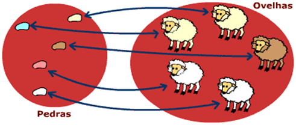

O conceito de número na sua forma mais simples é claramente abstrata e intuitiva.
Número é um objeto da matemática usado para descrever quantidade, ordem ou medida.
O conceito de número provavelmente foi um dos primeiros conceitos matemáticos assimilados pela humanidade no processo de contagem.
Para isto, os números naturais eram um bom começo.
Em todas as épocas da evolução humana, mesmo nas mais atrasadas, encontra-se no homem o sentido do número.
Esta faculdade lhe permite reconhecer que algo muda em uma pequena coleção (por exemplo, seus filhos, ou suas ovelhas) quando, sem seu conhecimento direto, um objeto tenha sido retirado ou acrescentado.
A correspondência biunívoca resume-se numa operação de "fazer corresponder". Pode-se dizer que a contagem se realiza fazendo corresponder a cada objeto da coleção (conjunto), um número que pertence à sucessão natural: 1,2,3...
A gente aponta para um objeto e diz: um; aponta para outro e diz: dois; e assim sucessivamente até esgotar os objetos da coleção;
|  |
Utilizando correspondência biunívoca é que pastores sabiam no final do dia se no seu rebanho estava faltando ou sobrando alguma ovelha.